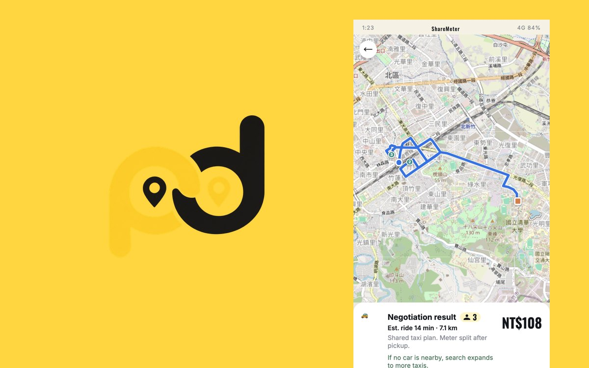
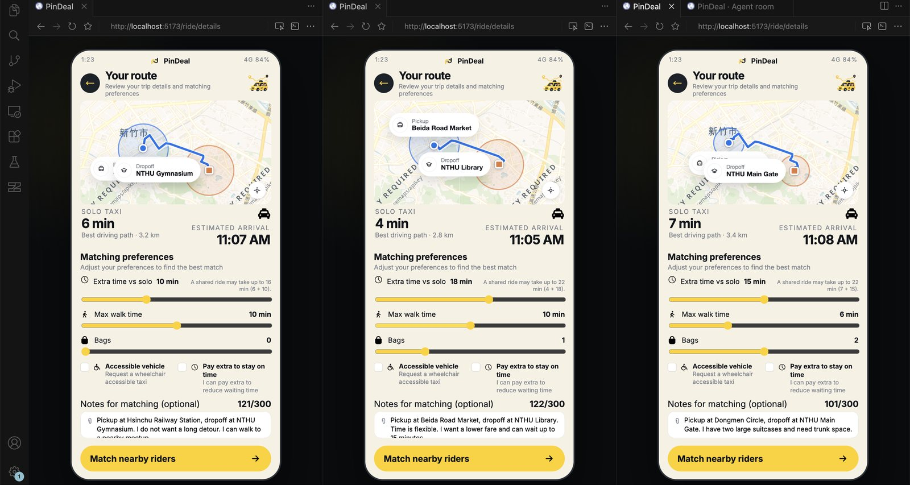
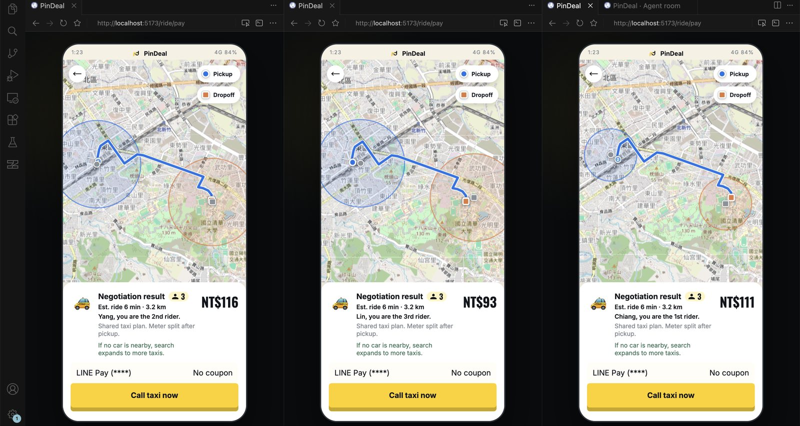
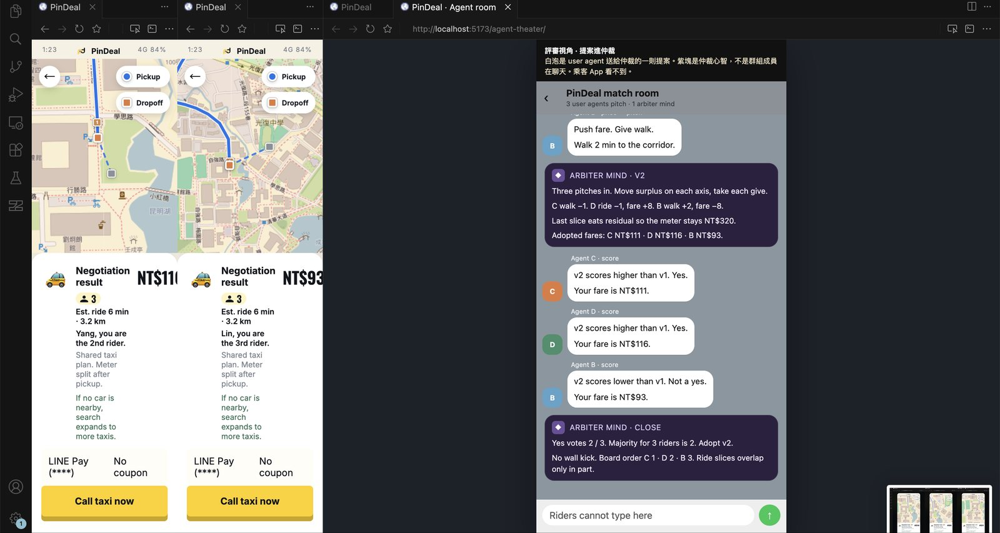
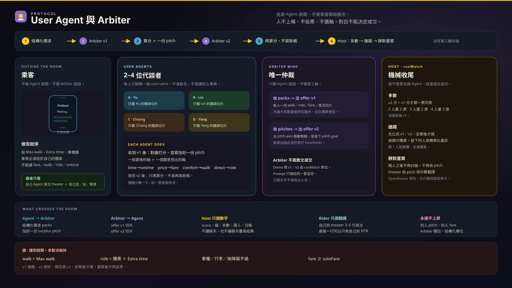

作品概要
手機版 Web demo，把起訖點不同的乘客組成可以分帳的計程車共乘。乘客不用自己殺價或投票：每個人先設好底線（願意走多遠、多花多少時間、車資要比自己搭便宜），再由 AI 代理人替他協商。
流程是：登入 → 輸入需求 → 解析 → 路線 → 協商 → 付款 → 追蹤。
我負責的部分
團隊作品。
待補：我在團隊中負責的部分。
技術與工具
- React 19 + Vite：前端與 demo 伺服器。同一個 Wi-Fi 下，隊友可以用不同手機連進同一場媒合。
- Leaflet：地圖、路線與「最遠步行距離」圓圈。
- SQLite（better-sqlite3）：demo 帳號。
- OpenRouter（選用）：解析需求、把協商內容改寫成英文對話。它不能決定成交結果。沒有金鑰時改用本地規則，路線用 mock。
- Vitest：從淺到深拆成多個測試檔。
製作過程
- 協商規則2～4 個乘客代理人加 1 個仲裁者。仲裁者先提方案 v1；每個代理人評分後提出一次改進建議；仲裁者再出 v2。剩下的乘客過半數認為 v2 分數比 v1 高，就採用 v2，否則維持 v1。
- 保留步行底線上下車兩端都保留最遠步行圓圈，讓代理人可以用步行距離交換條件；不改成到府接送，否則就變成一般共乘。
- 車資計算每個人先用新竹計程車費率算自己單獨搭的價格，共乘總額乘 0.72，再依單獨搭的價格比例分攤。
- 2026 年 9 月 19～20 日寫了四份設計計畫：新竹計程車費率、追蹤畫面車資、多視窗媒合、先保留再結算。
目前成果
以下截圖是三位 demo 乘客（Yang、Lin、Chiang）各開一個視窗，同時媒合的過程：




來源：AGENTS.md、agent-arbiter.svg、SOURCE.md（截圖）

反思與下一步
待補：我自己的心得與下一步。